Project 4: Image Warping and Mosaicing
Student Name: Kelvin Huang
Part 1: Shoot the Pictures
In this part, I captured the following images for use in the rectification and mosaicing process.
For rectification:
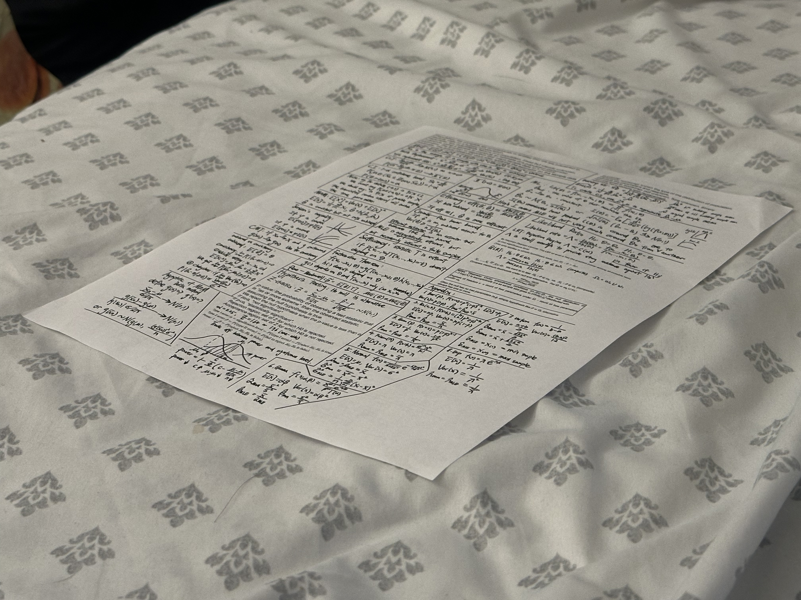
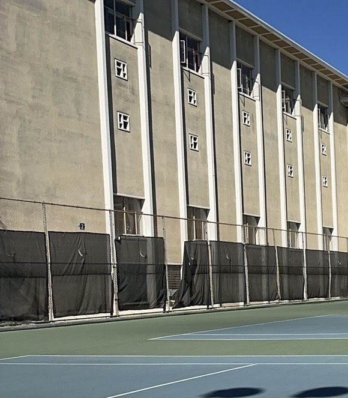
For mosaicing:
1: A Attraction in China
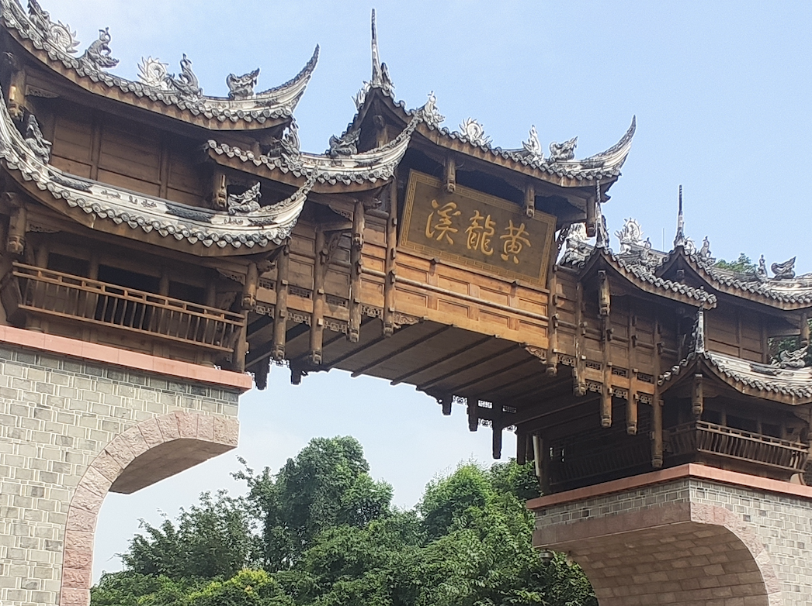
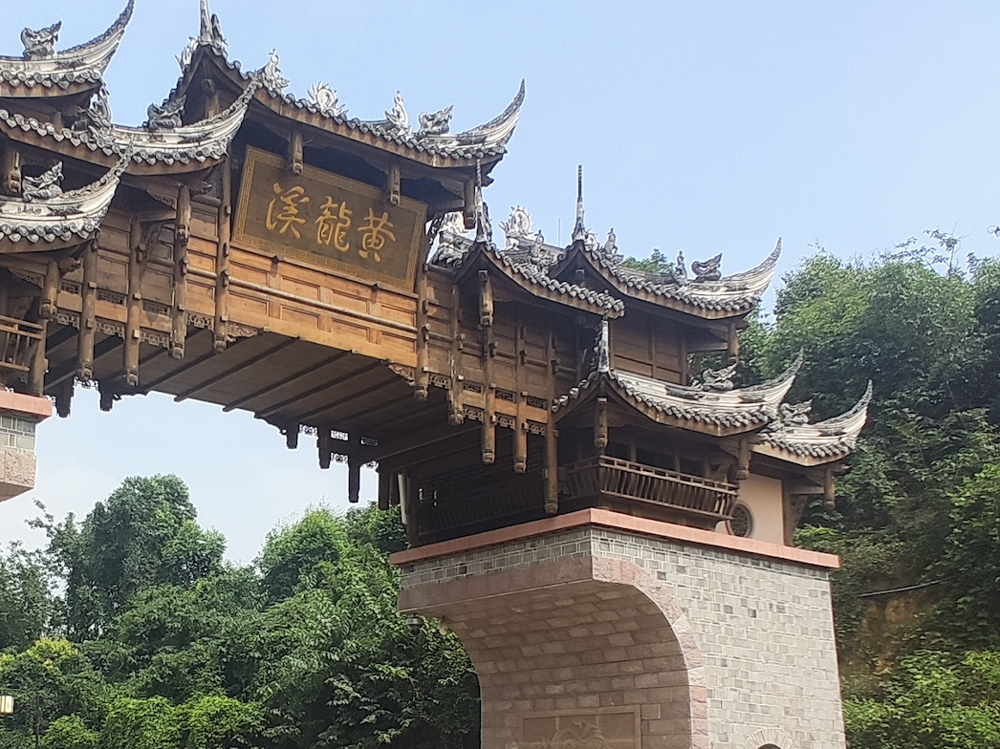
2. Buildings in San Francisco. I took them when I was doing Cal Hacks. It was really fun!!
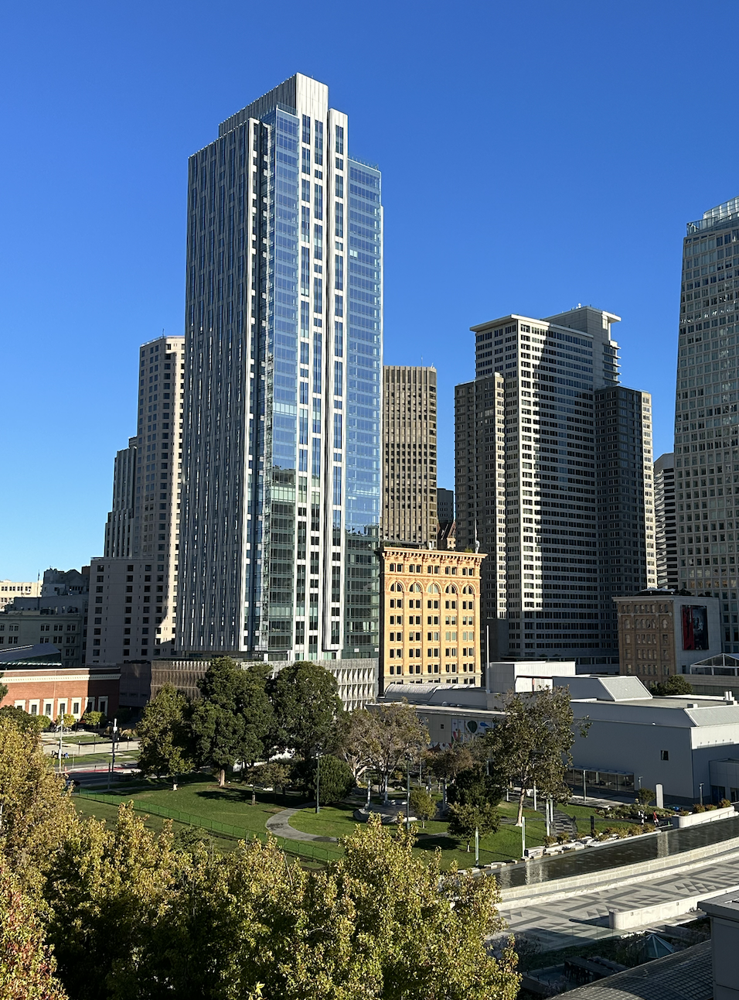
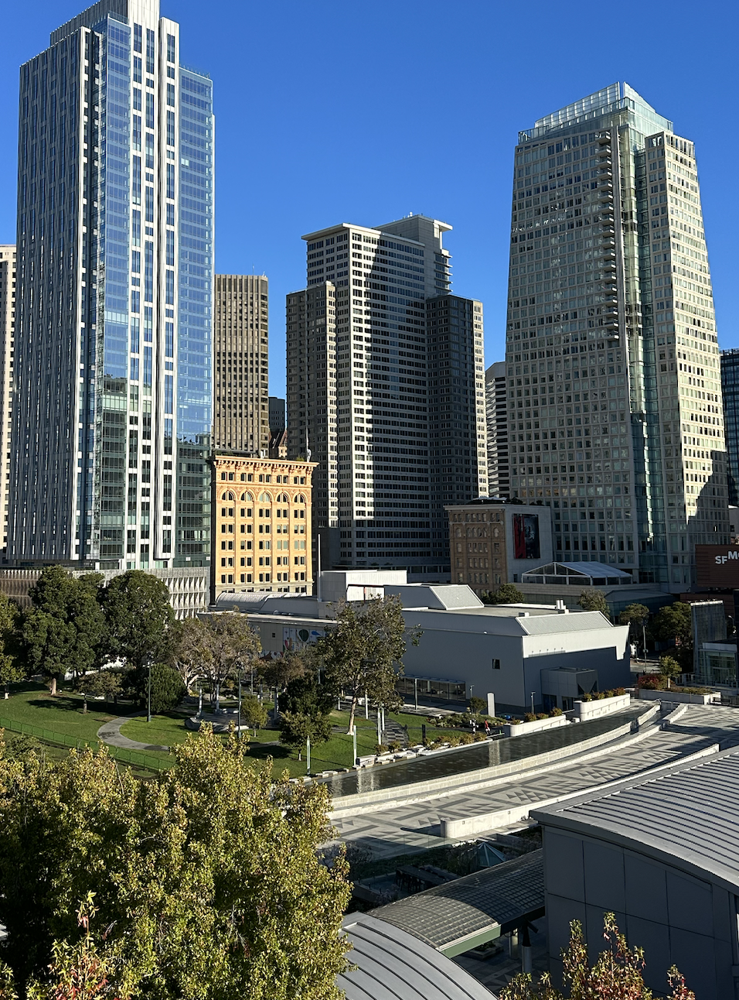
3. Night view out of my dorm window
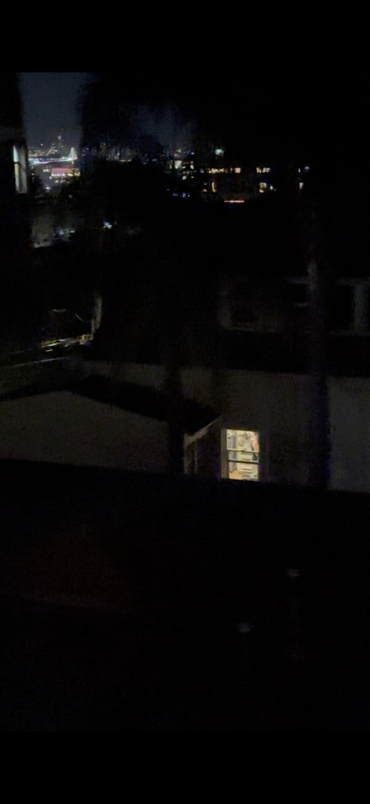
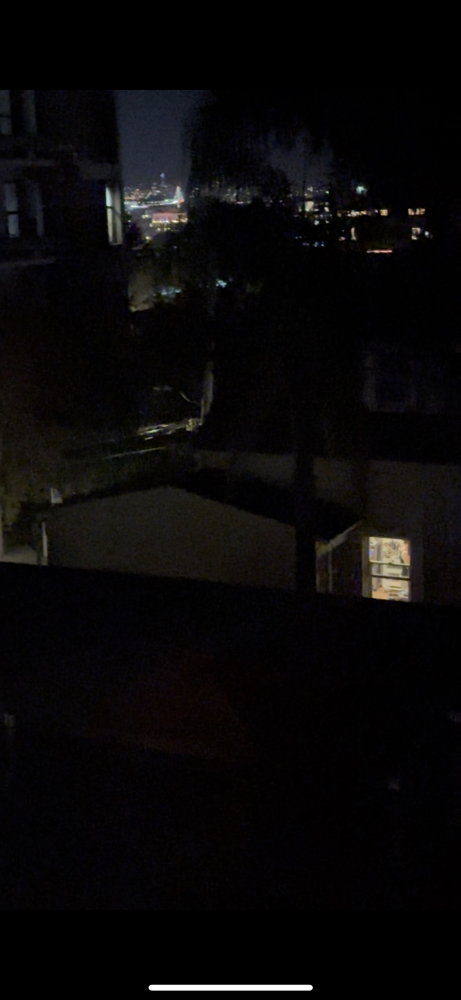
4. My room
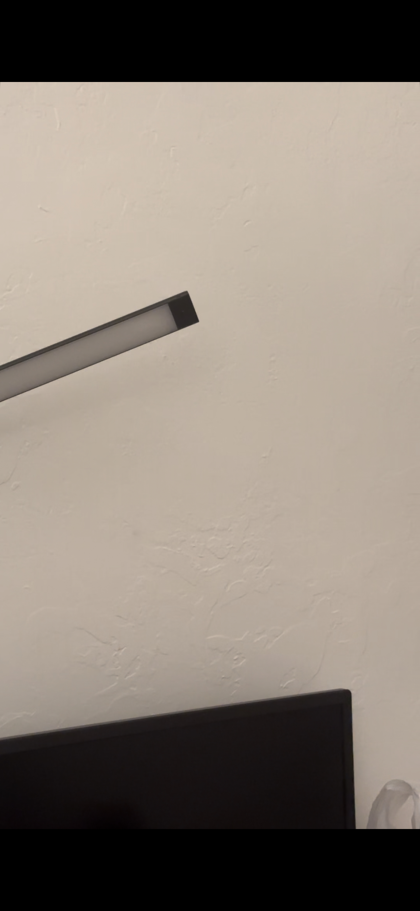
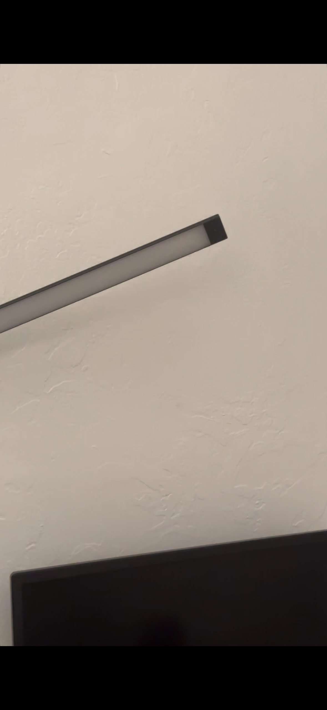
Part 2: Recover Homographies
In this part, I computed the homographies between different images by selecting corresponding points in the images. Using these correspondences, I calculated the transformation matrices that map one image onto another. This allows me to align the images geometrically for mosaicing.
Below is the pseudocode for computing the homography matrix:
1. Convert input points (im1_pts, im2_pts) from both images into arrays
2. Initialize an empty matrix A
3. For each point correspondence:
a. Extract (x1, y1) from image 1 and (x2, y2) from image 2
b. Add two rows to matrix A using the coordinates (x1, y1) and (x2, y2)
4. Apply Singular Value Decomposition (SVD) to matrix A
5. Extract the homography vector from the last row of the V matrix from SVD
6. Reshape the vector into a 3x3 matrix
7. Normalize the matrix by dividing all elements by the bottom-right element
8. Return the resulting homography matrix H
Part 3: Warp the Images
With the homographies recovered in Part 2, I warped the images into a common coordinate system. This step involves applying the homographies to transform the perspective of each image so that they align perfectly.
Below is the pseudocode for warping the images using the homography matrix:
1. Extract the image's height and width
2. Define the corner points of the image
3. Apply the homography matrix H to warp these corner points
4. Compute the new bounding box of the warped image
5. Calculate the translation matrix to shift the image into the correct position
6. Compute the inverse of the translated homography matrix
7. Create an empty output image with the new size (based on the warped bounding box)
8. For each pixel in the output image:
a. Use the inverse homography to find the corresponding source pixel
b. Use interpolation to get the pixel value from the source image
9. Return the warped image
Part 4: Image Rectification
In this part, I used manual point selection to identify the four corners of a rectangular object in the original image. Using these selected points, I calculated a homography matrix to transform the image into a rectified view where the object appears front-facing.
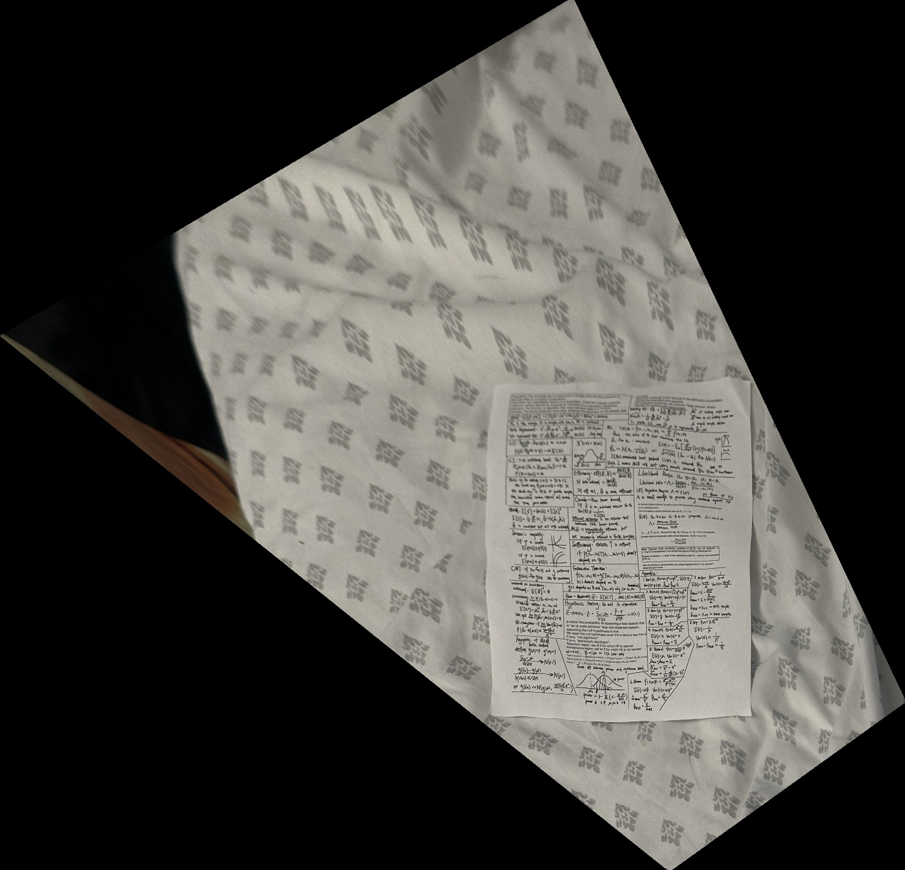
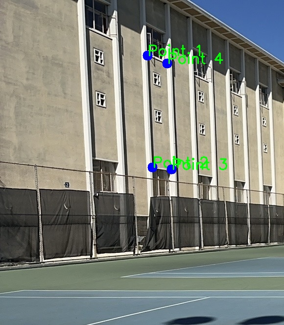
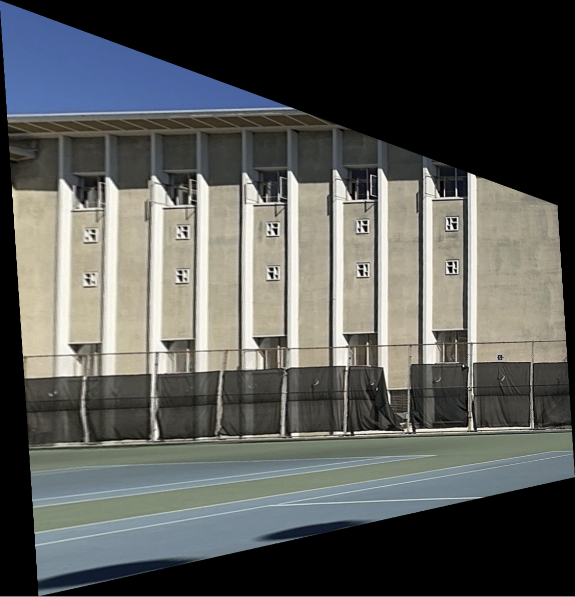
Part 5: Blend the Images into a Mosaic
Finally, I blended the warped images together into a seamless mosaic. I used feathering techniques to blend overlapping areas smoothly, ensuring the transition between images is natural and continuous. The final result is a single panoramic image constructed from the individual images taken in Part 1.


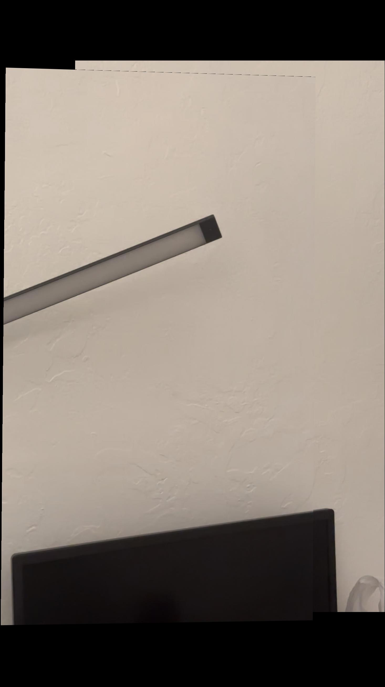